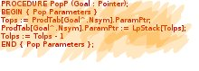

Email Us
if you have a problem you would like solved then drop us a line:

About Us
John GREEN
After graduating from RMIT in Computer Science
I worked for the Western Australian Department of Lands and Surveys as a systems programmer
I wrote a relational database in FORTRAN based on the RISS database extending it considerably.
Developed other software for mapping. This was done on PDP-11/70, CDC Cyber and UNIVAC 1100.
Also in Perth I completed a master's preliminary on the topic
“Recursive Decent Parsing of van Wijngaarden (Two Level) Grammars” at UWA.
I also tutored part time at W.A.I.T. in programming.
Back in Melbourne I worked for Hewlett Packard as an Applications Engineer where I had customer
accounts and did customer support and giving courses. I also supported the HP User Groups and the
produced the User Group newsletter.
After HP I worked for TUSC as software developer.
There I worked on Monitor on the HP 1000 RTE-A and Telstra's AMS on Unix. I also developed software on DOS.
I left TUSC in 1993 and started Ionus Pty Ltd to develop software.
Developed and improved graphics software for BHP Petroleum.
Produced Satellite Earth Station monitoring software for DoD in partnership with NEC.
This was with C on QNX and QNX Windows.
I then worked on ARC systems GIS system being developed for Bell South.
Worked on the NEC S2 Satellite phone creating a MIB and protocol. Some of it on OS 9.
Updated and maintained the S2 phone tester on QNX and QNX windows.
Worked on ICO system developing testing and simulation software. Both Unix and MS Windows based,
C and VB. Much use of GSM was made.
Spent some time working for Ericsson on their legal intercept system using C and C++ on Sun SPARC systems.
Updated the Satellite Earth Station system to do local monitoring and deployed it Australia wide for the DoD.
Developed a C compiler, assembler and Virtual Machine (VM). Also developed operating system,
flash file system running on the PIC microprocessor.
Developed various other programs and algorithms that ran on the VM including red light and speed camera
location application.
Worked for ACTAB Canberra as software developer on their wagering system.
Developed a high availability system for Symstream on Unix (Linux) for their communications servers.
Updated the C compiler and added a linker, librarian and debugger for the Virtual Machine (now call FME) with
Freestyle Energy Ltd.